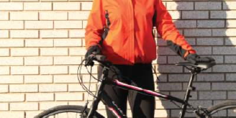

Winterize you + your bike
Commuting by bicycle is absolutely AMAZING. Pumping pedals, rather than gas, is a natural caffeine boost that leaves you feeling exhilarated when you enter the office. However, it’s that time of year when the temperatures drop, clothing is layered, and bikes are often put away. Don’t let the cold deter you from continuing to commute or even starting to commute by bike this winter. It may seem daunting, but buying the appropriate gear to safely ride in the winter can be done frugally. The key is assessing your commute distance and personal tolerability for winter conditions, and then supplementing your current winter wardrobe.
When shopping for pieces of your bike commute ensemble, support your local bicycle shop, look for limited and lifetime warranties, shop end of season sales and check out consignment shops. There are also many local, bicycle-related Facebook.

There are three components you need to tackle when dressing for winter conditions: keeping warm, keeping the wind off your skin, and staying dry (on the outside as well as the inside). But first, there is a lot of jargon when it comes to cycling gear. So, here is a little break down of the key words:
Sweat Wicking – The ability of material to move sweat from your skin to the fabric's surface where it can evaporate.
Breathable – The ability of a material to allow perspiration vapor to be transmitted through the material.